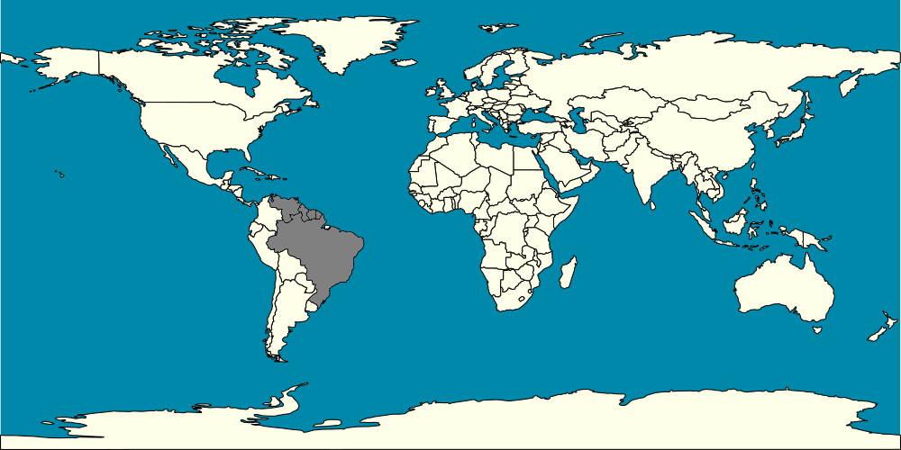

(Não Avaliada/Not Evaluated)
(Não Avaliada/Not Evaluated)

Nome científico: Nannostomus beckfordi Günther, 1872.
Origem: bacia do Amazonas e Rio Negro (Guiana, Suriname, Guiana Francesa, Brasil, Venezuela).
Biotópo: Vive nas margens dos igarapés, geralmente em águas negras com muitos troncos e galhos e substrato de areia ou húmus e serrapilheira.
Temperatura: 24 a 26 oC
pH: 6,0 - 8,0
dH: 18 a 268 ppm. (1 a 15)
Condutividade: 315,35 μS/cm
Expectativa de vida: 3 a 5 anos.
Tamanho: 40 mm --- Peso: 0,12 - 0,63 g.
Comportamento: pacíficos, forma grupos dominados por machos que estabelecem e defendem pequenos territórios. Costumam habitar a coluna de água próxima ao fundo.
Alimentação: são onívoros e aceitam ração seca. São peixes muito pacíficos e tem dificuldades de competir por alimento com outros peixes mais agitados, então atenção deve ser dada para que nessas condições não definhem por falta de comida.
Dimorfismo sexual: Os machos apresentam mais intensidade nas cores que as fêmeas, principalmente nos que se refere a cor vermelha. Eles também apresentam nadadeira anal curvada e vermelha, já ela apresentam reta e menos pigmentada. Os indíviduos adultos e bem condicionados também costumam apresentar diferença em relação a forma do corpo, com os machos maiores que as fêmeas e essas apresentando um abdômem mais volumoso.
Reprodução: são de dificuldade média. São espalhadores de ovos (até 200 ovos) e não mostram cuidado parental. Os filhotes são extremamente pequenos.
Incubação: 30 a 40 horas
Observações
É uma espécie muito apreciada por aquaristas.
Na reprodução é recomendada uma proporção de 1 macho para 2 fêmeas.
Área de Ocorrência
Fotos